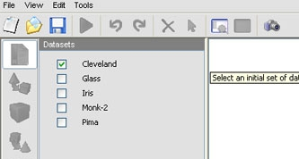
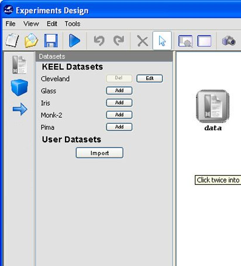

 button near the DataSet's name and the following dialog appears.
button near the DataSet's name and the following dialog appears.
Initially, this dialog has the whole file. So, if you want to remove some of them, select it and then click the
 button. Another way is to remove all the files by clicking the
button. Another way is to remove all the files by clicking the  button, and then add the files you want. To do that, you must look for the training and test file by clicking the button and, after that, click the
button, and then add the files you want. To do that, you must look for the training and test file by clicking the button and, after that, click the  button.
button.